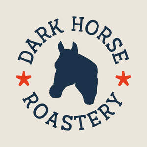
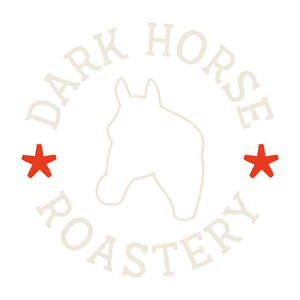

Trade Mark Journal No.2025/017 25 April 2025
UK00004185470 7 April 2025 (30,40,41,43)
Mark 1

Mark 2

- Class 30
- Coffee; coffee beans; roasted coffee beans; cocoa; tea (herbal and non-herbal); espresso beverages, and beverages made with a base of coffee and/or espresso, beverages made with a base of tea; powdered chocolate and vanilla beverages; natural sweeteners in the form of fruit concentrates; flavouring syrups; chocolate-based beverages; baked goods including muffins, scones, biscuits, cookies; cakes; dessert puddings; pastries and breads; baguettes; filled baguettes; panini; breads made from wheat, rye, oat, barley, buckwheat, spelt, and gluten-free flours; sandwiches; granola; cereal bars; ice cream and frozen confections; ice dessert; chilled dessert; prepared foods, meals and snacks; baked goods including muffins, scones, biscuits, cookies, cakes, pastries, bread, granola, cereal bars, sandwiches, baguettes, filled baguettes, panini.
- Class 40
- Coffee roasting and processing; coffee grinding; advice, consultancy and information relating to the aforesaid services.
- Class 41
- Education; providing of training; preparing, organising and conducting of training courses, seminars and educational events; barista training; industry barista training courses and home barista courses; consultancy, information and advisory services related to the aforesaid.
- Class 43
- Services for providing food and drink; cafe, cafeteria, snack bar, coffee bar and coffee shop services; catering services; food preparation; food cooking services; catering services for events, whether in private homes or public venues; cookery advice; consultancy, information and advisory services related to the aforesaid.
Dark Horse Roastery Ltd
Representative: Inbrandgible Limited